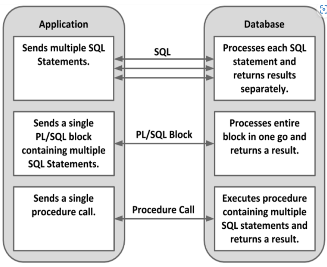

What is PLSQL
PL/SQL is a procedural extension of SQL, making it extremely simple to
write procedural code that includes SQL as if it were a single
language.
The data types in PL/SQL are a super-set of those in the database, so
you rarely need to perform data type conversions when using PL/SQL

Features of PLSQL
PL/SQL is basically a procedural language, which provides the
functionality of decision making, iteration and many more features of
procedural programming languages.
PL/SQL can execute a number of queries in one block using single
command.
One can create a PL/SQL unit such as procedures, functions, packages,
triggers, and types, which are stored in the database for reuse by
applications.
PL/SQL provides a feature to handle the exception which occurs in
PL/SQL block known as exception handling block.
Applications written in PL/SQL are portable to computer hardware or
operating system where Oracle is operational.
PL/SQL Offers extensive error checking
Structure of PLSQL Block
The basic unit in PL/SQL is a block
All PL/SQL programs are made up of blocks, which can be nested within
each other
Typically, each block performs a logical action in the program.
DECLARE
-- Declaration Statements (optional) --
BEGIN
-- Executable Statements(mandatory) --
EXCEPTION
-- Exception Handling Statements(optional) --
END;